السلسلة 29
السيارة (صنف B) · 40 سؤال بالصوت. حاول تجاوب بوحدك، من بعد شوف الجواب.
السؤال 1
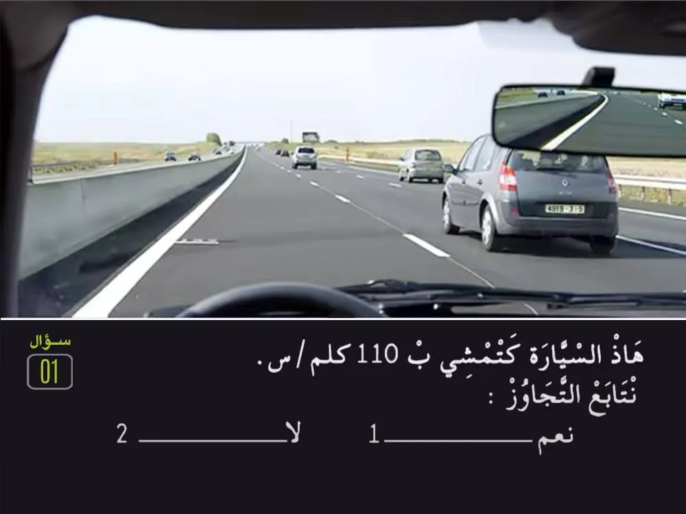
بيّن الجواب
الجواب الصحيح: 1
نتواجد في طريق ذات إتّجاه واحد وهذا واضح من خلال الخط المتّصل على اليسار، وبما أن السؤال يقول أن السيّارة تسير بسرعة 110 كلم في الساعة فهدا يعني على أننا نتواجد في طريق سيّار. إذن بما أننا نسير في طريق سيّار والسرعة محددّة في 120 كلم في الساعة، إذن يمكنني متابعة تجاوز هذه السيّارة.
السؤال 2
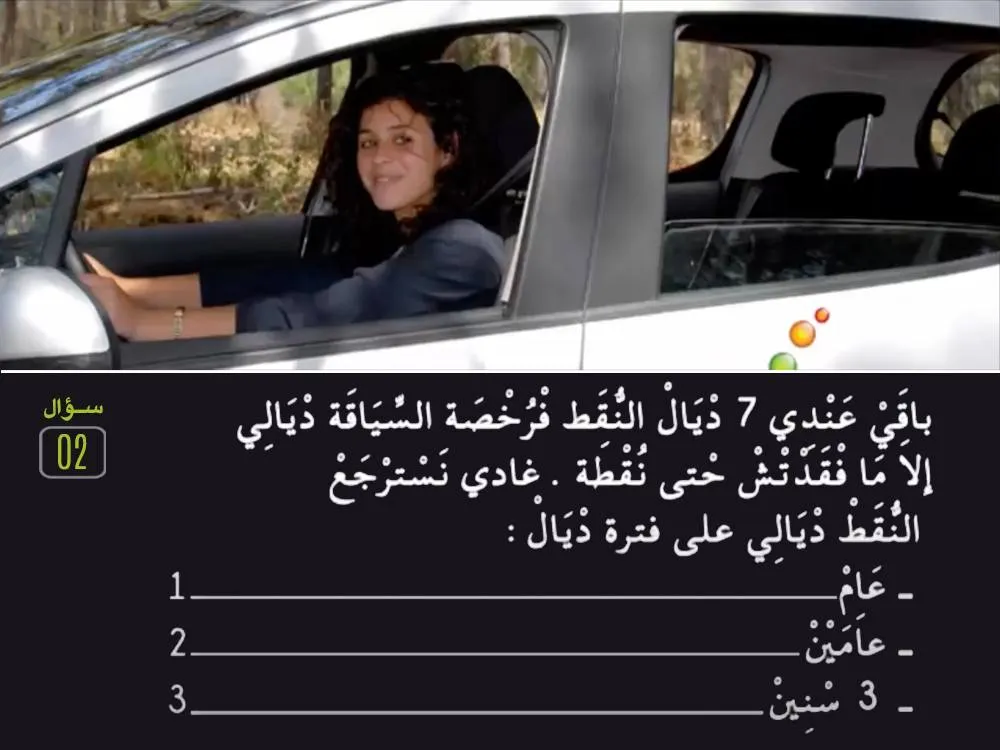
بيّن الجواب
الجواب الصحيح: 3
مازلت أتوفّر على بعض النّقاط في رخصة السّياقة الخاصة بي، إذا لم اقم بعمل مخالفة اخرى لمدّة 3 سنوات، فيمكنني استرجاع جميع نقط رخصة السياقة (30 نقطة) لكن فقط إذا لم اقم بعمل مخالفة اخرى.
السؤال 3
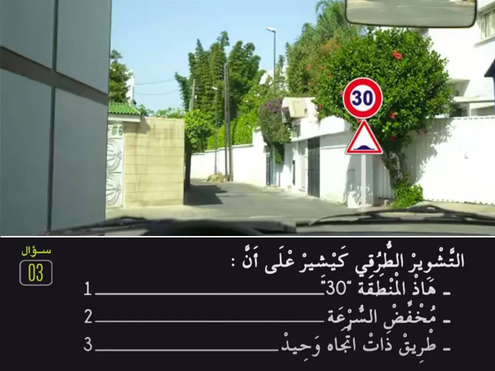
بيّن الجواب
الجواب الصحيح: 2
العلامات الطّرقية تشير إلى انتباه خطر مخفض السرعة. (العلامة الطّرقية تعني تحديد السّرعة في 30 كلم في الساعة، وليس هذه المنطقة 30، لا توجد علامة طرقية تشير إلى أن الطّريق ذات إتّجاه وحيد).
السؤال 4
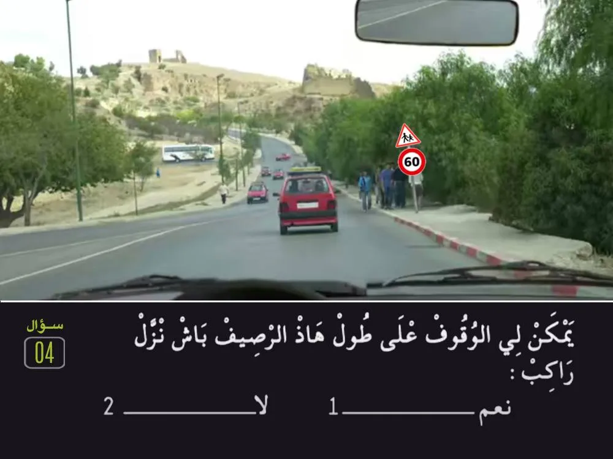
بيّن الجواب
الجواب الصحيح: 1
الرصيف مصبوغ باللون الأبيض والأحمر، وهو يعني على أن الوقوف مسموح به ولكن التوقّف ممنوع. إذن في هذه الحالة فيمكنني الوقوف على طول هذا الرّصيف لكي أنزل راكب.
السؤال 5
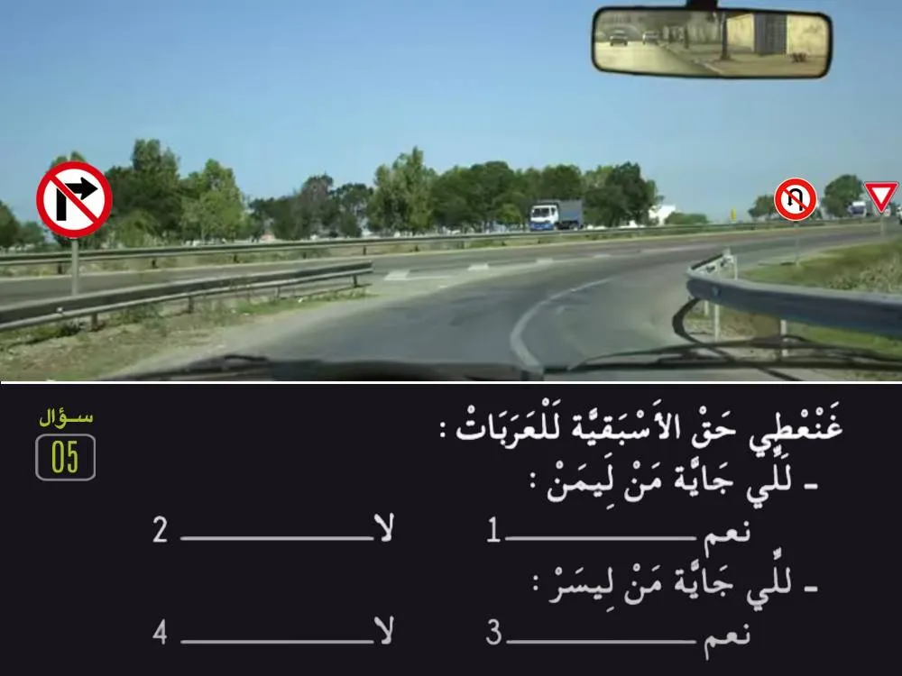
بيّن الجواب
الجواب الصحيح: 2 و 3
أتواجد في مسلك الاندماج، في الصورة وفي الأمام توجد الإشارة الطّرقية والتي تعني أنه ليس لديّ حق الأسبقية، إذن سوف أعطي حق الأسبقية للعربات القادمة من الجهة اليسار فقط. (لن أعطي حق الأسبقية لليمين لأنه لا توجد أصلا عربات قادمة من اليمين لكي أعطي لها حق الأسبقية، توجد فقط عربات قادمة من الجهة اليسرى).
السؤال 6
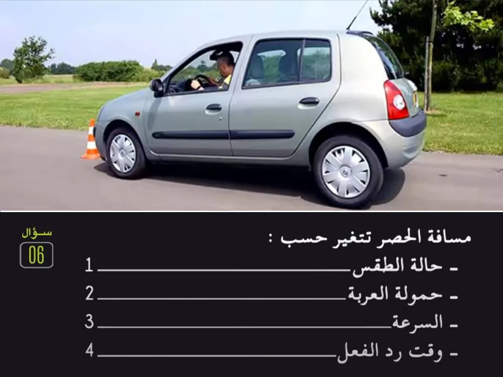
بيّن الجواب
الجواب الصحيح: 1 و 2 و 3
مسافة الحصر (أو مسافة الكبح أو مسافة الفرملة) فهي تتغيّر على حسب حالة الطّقس (مطر، ثلج ..)، حمولة العربة، وأيضا السّرعة فهي لها علاقة بمسافة الحصر. (وقت رد الفعل ليس له علاقة بتغيّر مسافة الحصر).
السؤال 7
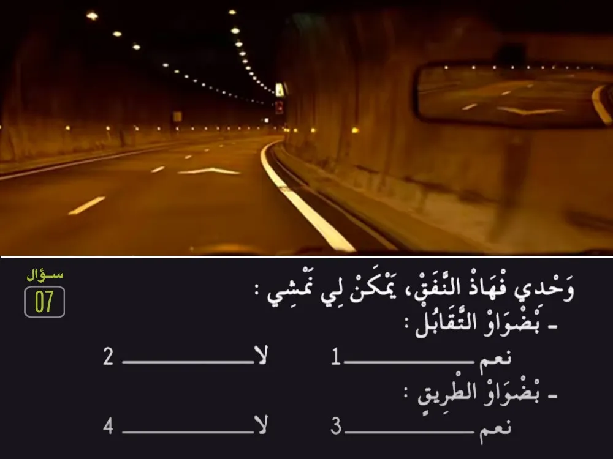
بيّن الجواب
الجواب الصحيح: 1 و 4
دائما في النّفق (توجد عربات أو لا توجد عربات، توجد إضاءة في النّفق أو لا توجد) فإن الأضواء التي يسمح لي باستعمالها في النّفق هي فقط أضواء التّقابل.
السؤال 8
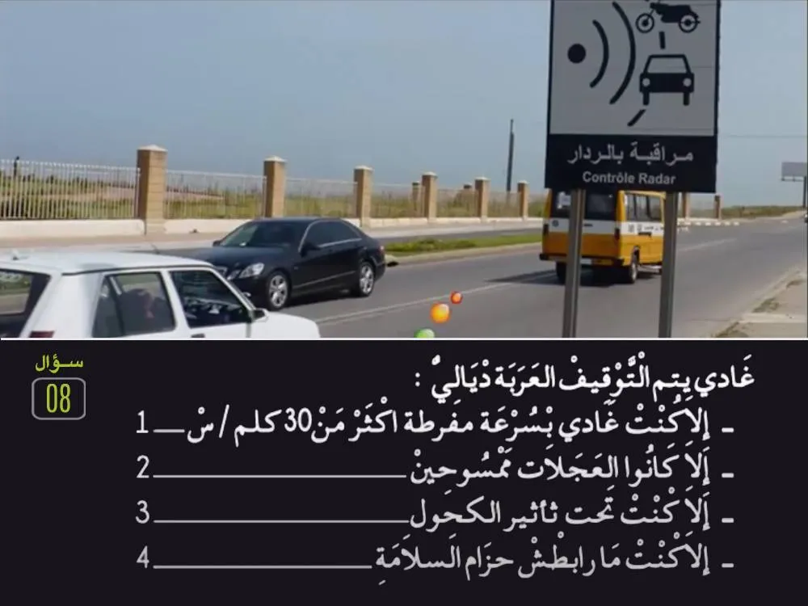
بيّن الجواب
الجواب الصحيح: 2 و 3
إذا كانت توجد مراقبة طُرقية في الطّريق من طرف الضباط والأعوان التابعين للشرطة القضائية أو والدرك الملكي أو الأمن الوطني أو مراقبي الطرق التابعين لوزارة التجهيز والنقل، فلديهم الحق في توقيف عربتي وأخذها للحجز إذا كانت عجلات العربة ممسوحة (لأنها لم تعد صالحة للاستعمال) وأيضا إذا كنت تحت تأثير الكحول. (المخالفات الأخرى في الصورة فسوف يتم تحرير مخالفة فقط ولا يتم حجز السيّارة).
السؤال 9
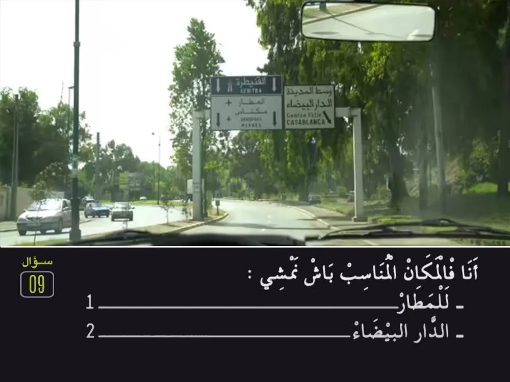
بيّن الجواب
الجواب الصحيح: 1 و 2
لو لاحظنا جيدا في الصورة فسوف نرى على أن مِقْوَدْ السّيارة في وسط الطّريق إذا لا أسير في المسلك على اليمين أو في المسلك على اليسار أتواجد في المنتصف. في هذه الحالة فإنه لازال أمامي وقت للاختيار أين سوف أتّجه. إذن يمكنني الاتّجاه للمطار إذا قمت بالسّير في المسلك على اليسار، ويمكنني الاتّجاه للدار البيضاء لو قمت بالسّير في المسلك على اليمين.
السؤال 10
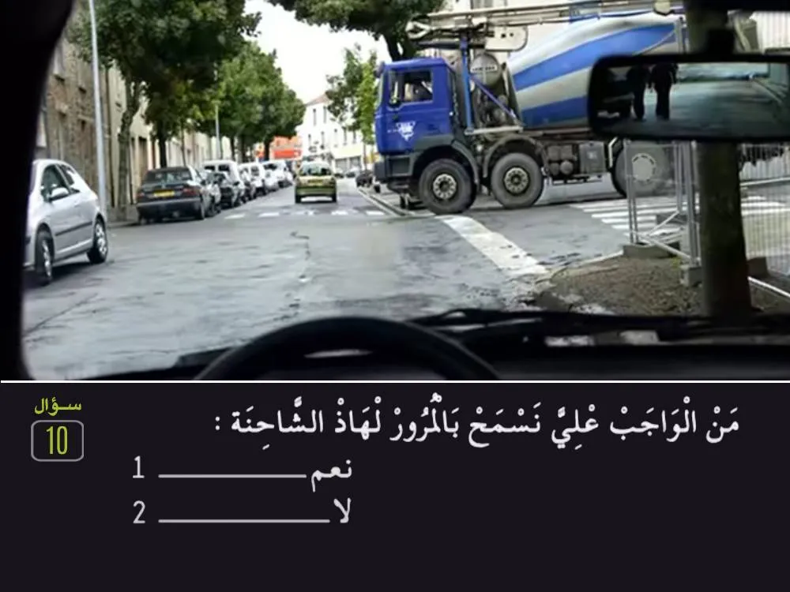
بيّن الجواب
الجواب الصحيح: 2
هذه الشاحنة فهي عربة عادية وليست من بين العربات التي يجب أن نعطيهم حق الأسبقية (مثل الإسعاف والمطافئ و ..)، إذن بما أن الشّاحنة لديها خط مرسوم على الأرض فهو يعني علامة قف. إذن يجب على الشّاحنة إعطائي حق الأسبقية. إذن ليس من الواجب عليّ السّماح بمرور هذه الشاحنة لأن الأسبقية لي.
السؤال 11
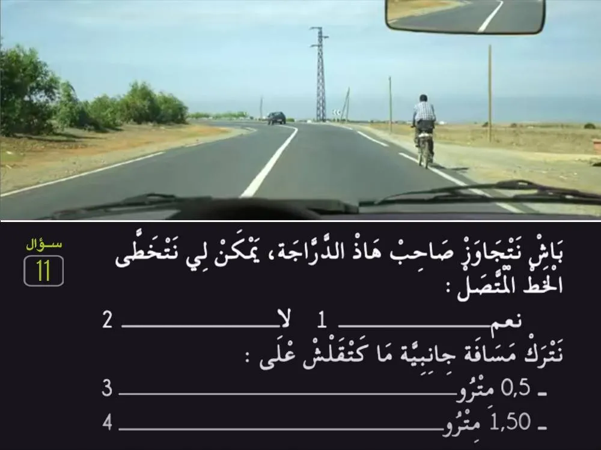
بيّن الجواب
الجواب الصحيح: 2 و 4
لكي أقوم بتجاوز صاحب هذه الدّراجة فلا يمكنني تخطّي الخط المتّصل لأنه ممنوع. بما أنني خارج التجمّع الحضري فيمكنني استعمال المنبّه الصوتي بصورة خفيفة لكي يقوم صاحب الدّراجة بالانحياز لليمين وبذلك يمكنني تجاوزه مع ترك مسافة متر ونصف كمسافة جانبية بما أنني خارج المدينة وبدون أن أتخطى الخط المتّصل.
السؤال 12
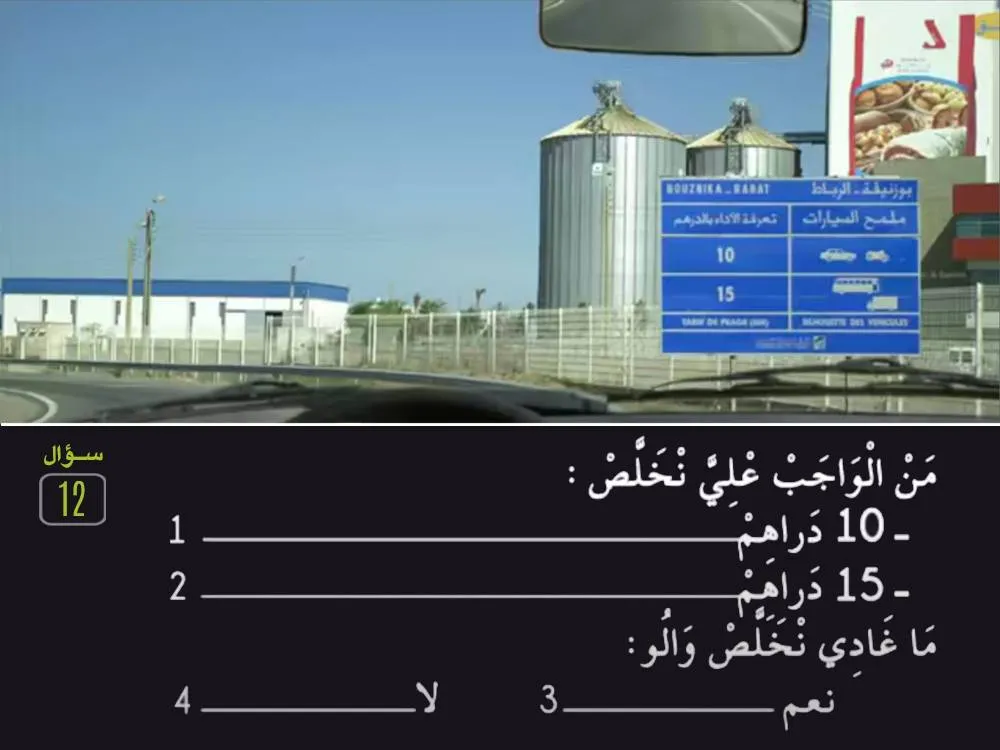
بيّن الجواب
الجواب الصحيح: 1 و 4
العلامة الطّرقية توضّح على أن تعريفة الاداء بالنسبة للدّرجات والسيارات العادية هي 10 دراهم، وبالنسبة للحافلات والشاحنات هي 15 درهم. إذن سوف أقوم بدفع 10 دراهم.
السؤال 13
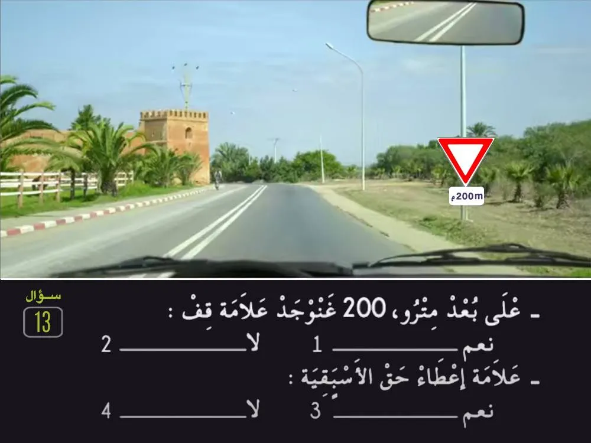
بيّن الجواب
الجواب الصحيح: 2 و 3
العلامة الطّرقية تعني على أنه ليس لديّ حق الأسبقية على بعد 200 متر. يعني بعد 200 متر من هذه العلامة سوف نجد نفس علامة إعطاء حق الأسبقية في ملتقى الطّرق القادم.
السؤال 14
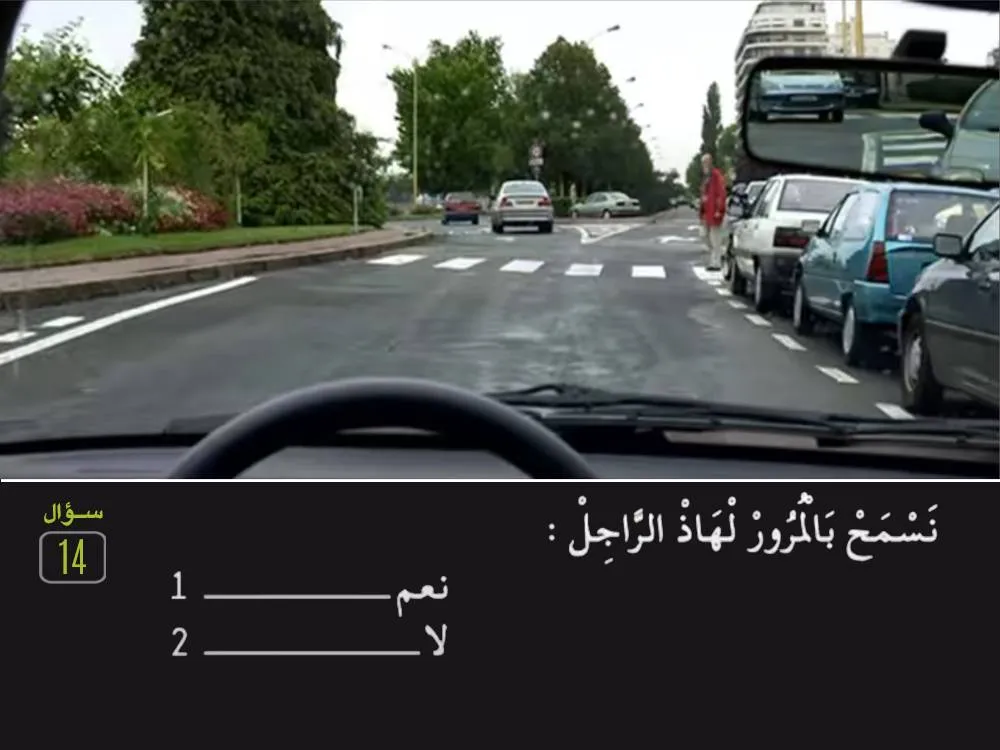
بيّن الجواب
الجواب الصحيح: 1
بطبيعة الحال عندما يندمج الراجل في ممر الرّاجلين فلديه هو حق الأسبقية. إذن سوف أسمح بالمرور لهذا الرّاجل.
السؤال 15
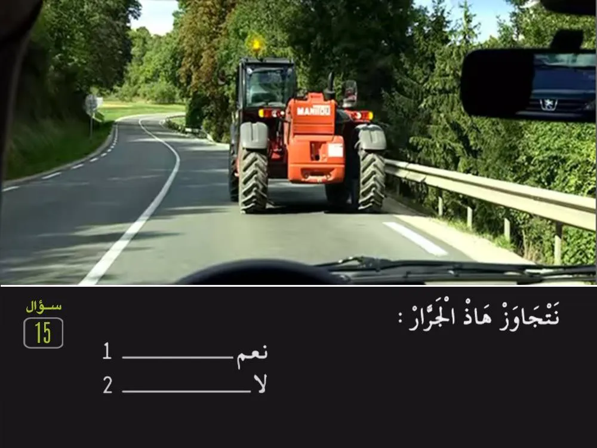
بيّن الجواب
الجواب الصحيح: 2
حتى وإن كان الجرّار يسير بسرعة منخفضة فلا يُمكنني تجاوزه لأنه لديّ خط متّصل ممنوع عليّ تخطّيه إضافة إلى وجود منعرج.
السؤال 16
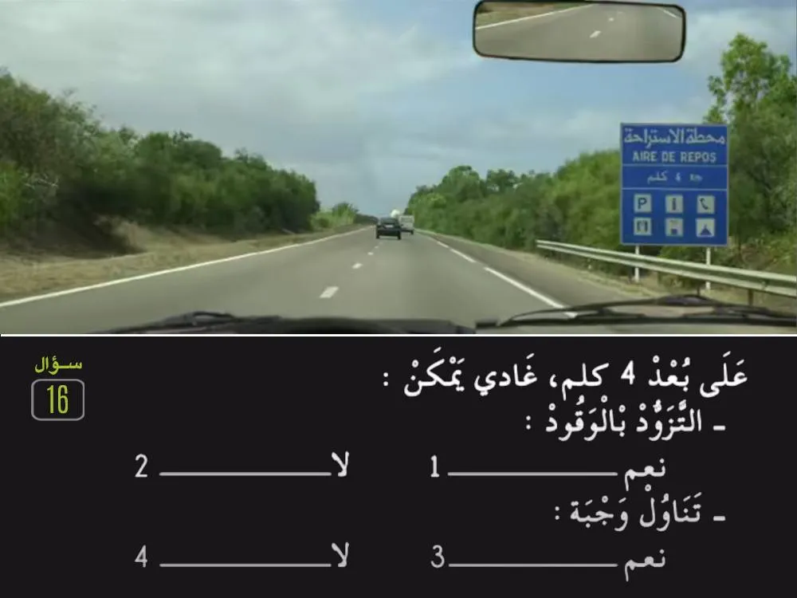
بيّن الجواب
الجواب الصحيح: 1 و 3
نتواجد في طريق سيّار، على بعد 4 كلم سوف نجد محطة استراحة كما تشير إليه العلامة الطّرقية، وفيها يمكننا أن نجد محطة وقود وكذلك يمكن أن نجد مطعم لتناول وجبة.
السؤال 17
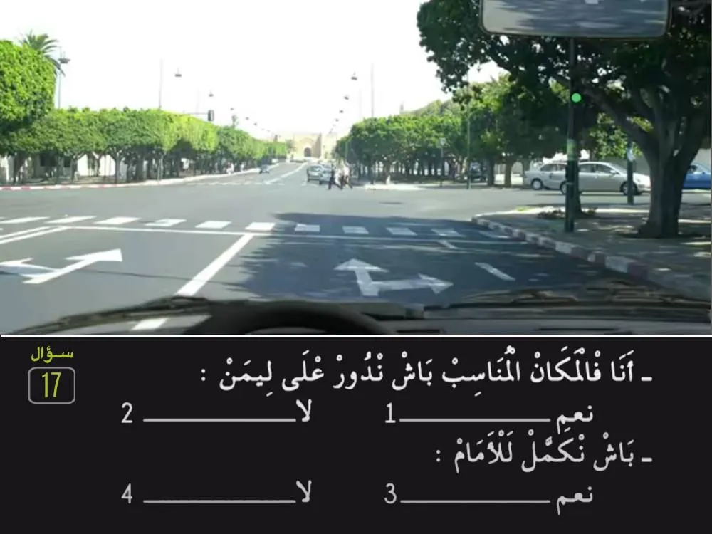
بيّن الجواب
الجواب الصحيح: 1 و 3
كما يشير التّشوير الأفقي، أسهم الإجبار المرسومة على الأرض، فإنها تجبرني على الانعطاف على اليمين أو إكمال السّير مباشرة. إذن أنا في المكان المناسب للانعطاف على اليمين وأيضا أنا في المكان المناسب لِتكملة السّير مباشرة.
السؤال 18
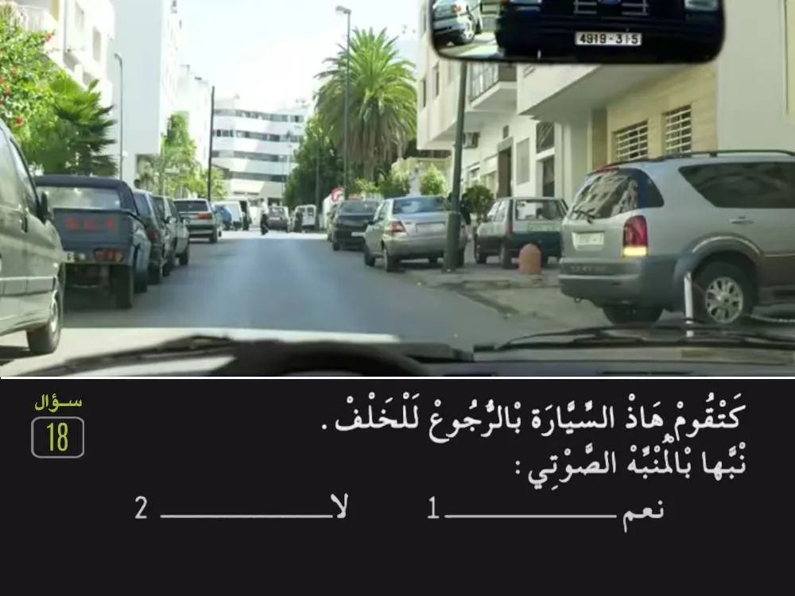
بيّن الجواب
الجواب الصحيح: 1
نتواجد داخل التجمّع السّكني واستعمال المنبّه الصّوتي يتم فقط في حالة وجود خطر. في هذه الحالة السيّارة تقوم بالرّجوع للخلف والرؤية غير واضحة بالنسبة لي السائق وممكن أن لا يلاحظ وجودي مما قد يسبب خطر، لذلك أستعمل المنبّه الصوتي.
السؤال 19
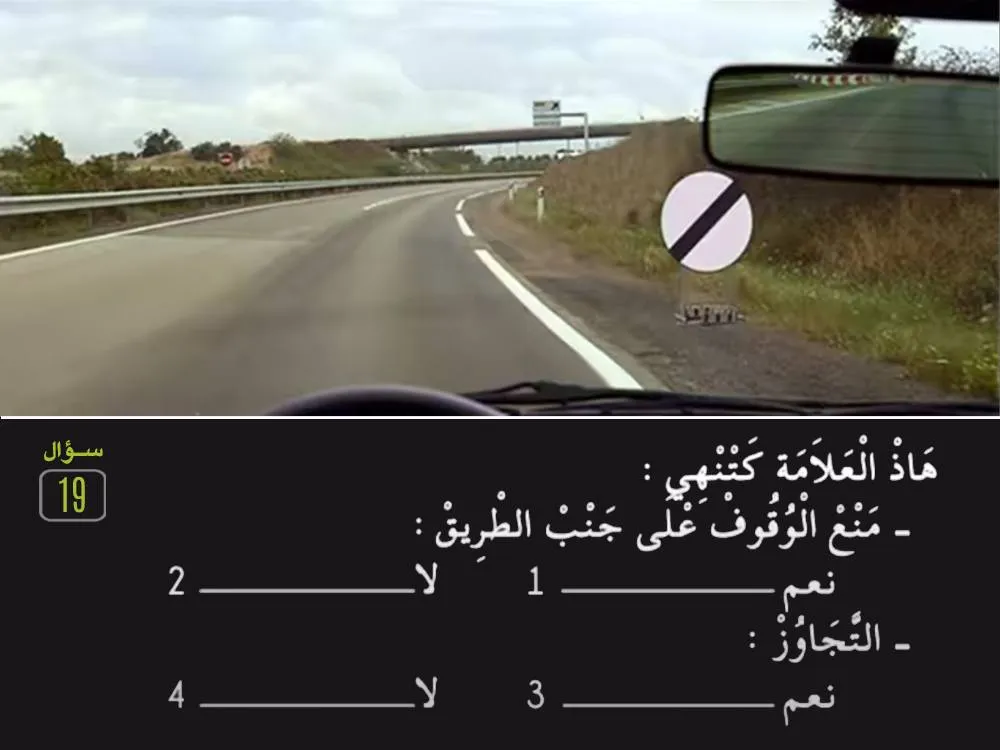
بيّن الجواب
الجواب الصحيح: 2 و 4
العلامة الطّرقية تشير إلى نهاية المنع الذي كان سابقا مهما كان نوعه (إلاّ الوقوف والتوقّف)، إذن هذه العلامة لا تنهي منع الوقوف على جنب الطّريق، وأيضا تنهي لا تنهي. (صيغة السؤال تقول أن العلامة تنهي التّجاوز، وليس كاتنهي منع التّجاوز، يوجد فرق).
السؤال 20
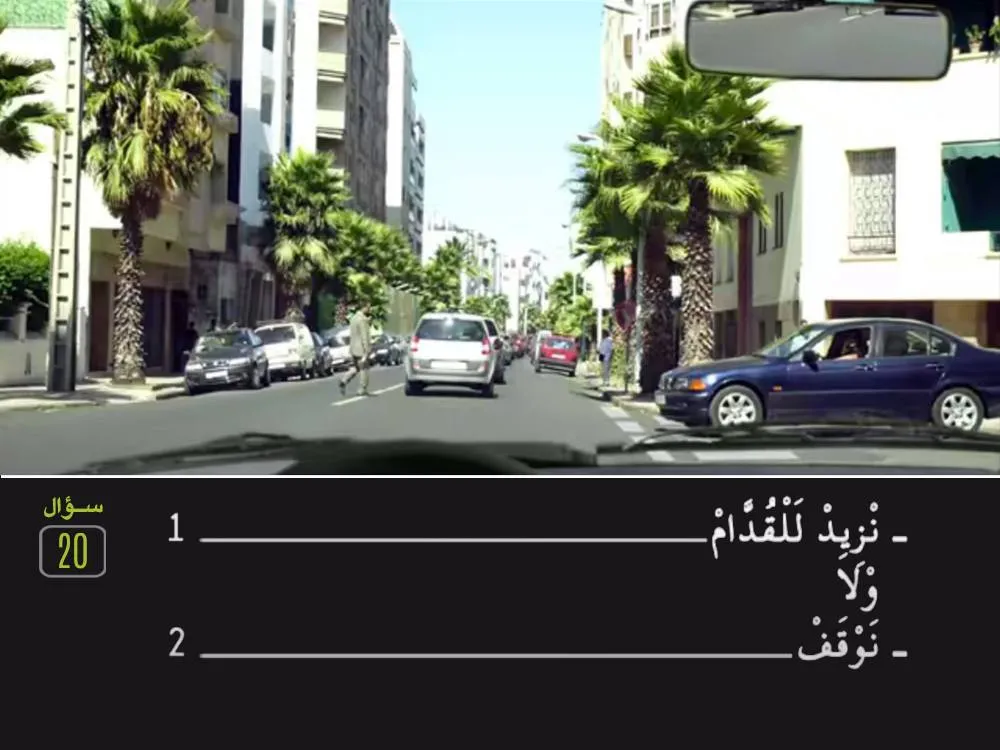
بيّن الجواب
الجواب الصحيح: 1
أتواجد في ملتقى الطّرق والأسبقية للسيارات القادمة من الجهة اليمنى، لكن في هذه الحالة السيّارة الزرقاء لديها خط متقطّع على الأرض والذي يعني أن السيّارة الزرقاء لديها علامة ليس لك حق الأسبقية. إذن الأسبقية لي.
السؤال 21
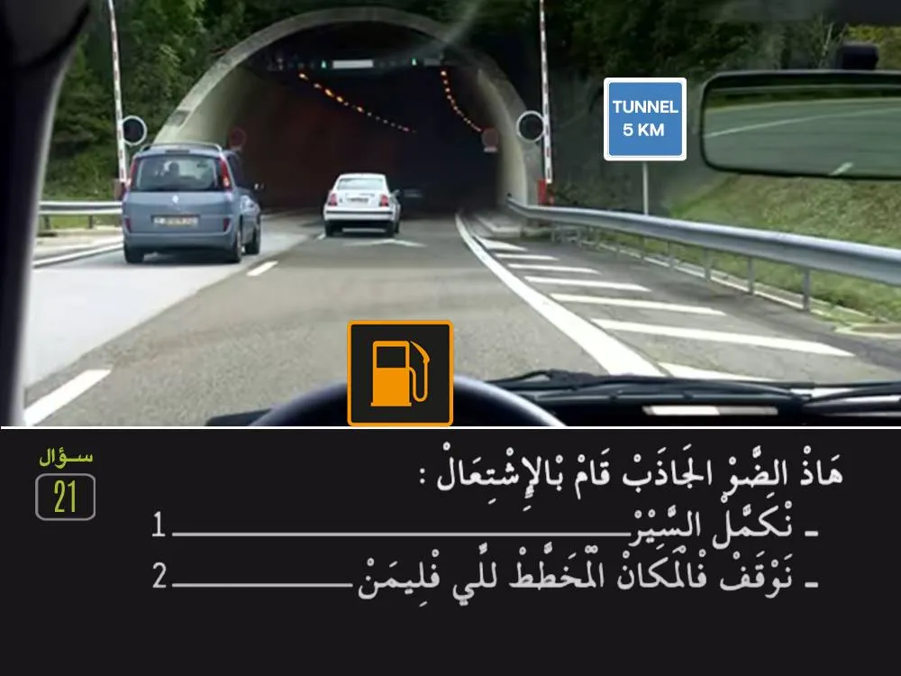
بيّن الجواب
الجواب الصحيح: 1
الضوء الجاذب باللون البرتقالي (اللون البرتقالي لا يشير إلى الخطر وإلى الوقوف الاستعجالي بل فقط يعطي معلومات تكميلية) في هذه الحالة فالضوء البرتقالي يشير إلى أن مستوى الوقود بدأ ينخفض. إذن بما أن الضوء الجاذب فهو برتقالي ولا يشير إلى خطر فيمكنني مواصلة السّير. والتوقف في محطة وقود قادمة لملئ خزان الوقود.
السؤال 22
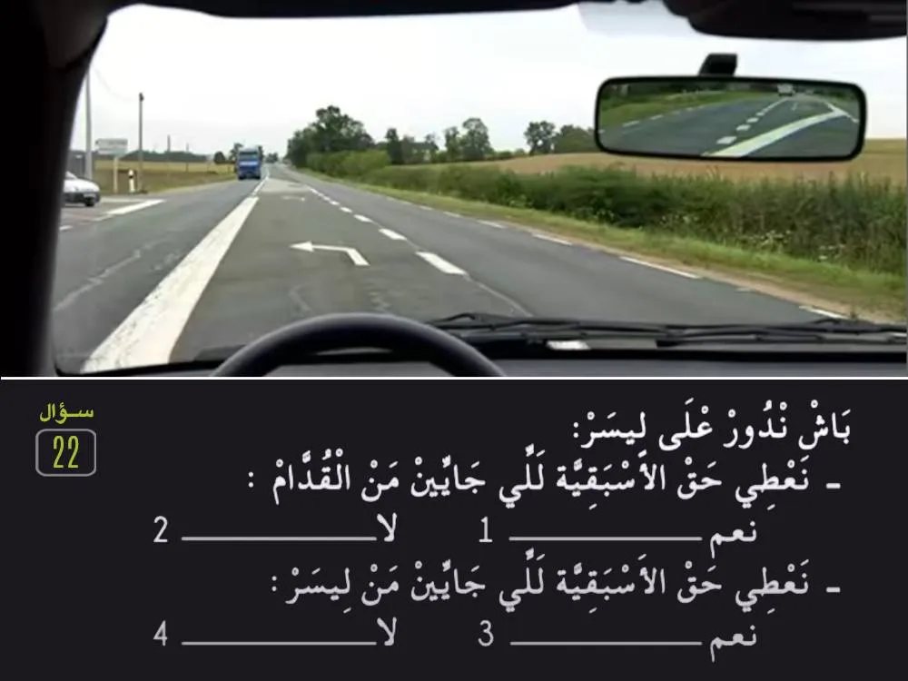
بيّن الجواب
الجواب الصحيح: 1 و 4
بما أنني مجبر للانعطاف على اليسار كما يوضحه سهم الاجبار المرسوم على الأرض، فيجب عليّ أن أعطي حق الأسبقية للعربات القادمة من الأمام لأن الأسبقية لهم، لكن بالنسبة للسيارات القادمة من الجهة اليسرى فيجب عليها أن تعطيني أنا حق الأسبقية لأنني أتواجد على يمينها وأيضا لديها خط متّصل على الأرض وهو يعني علامة قف ويجب عليها إعطاء حق الأسبقية لليمين واليسار. إذن أعطي حق الأسبقية للعربات القادمة من الأمام لكن لا أعطي حق الأسبقية للعربات القادمة من الجهة اليسرى.
السؤال 23
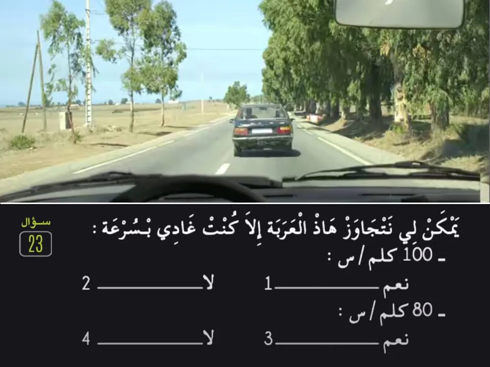
بيّن الجواب
الجواب الصحيح: 1 و 3
أتواجد خارج المجال الحضري وفي طريق وطنية، والسّرعة القصوى في طريق وطنية هي 100 كلم في الساعة. إذن بما ان الخط فهو متقطّع ويسمح لي بعملية التّجاوز ولا توجد سيارات قادمة في الاتجاه المعاكس أو سيارات تستعد للّتجاوز من الخلف فيمكنني تجاوز هذه العربة إذا كنت أسير بسرعة 100 كلم في الساعة وأيضا يمكنني تجاوزها إذا كنت أسير بسرعة 80 كلم في الساعة.
السؤال 24
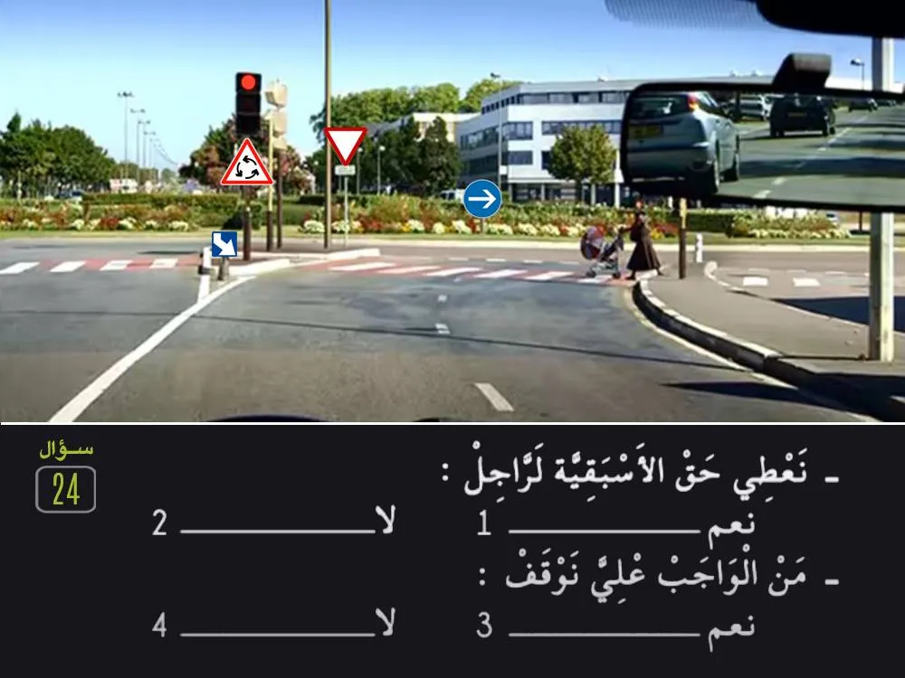
بيّن الجواب
الجواب الصحيح: 1 و 3
الإشارة الضوئية حمراء، إذن من الواجب عليّ الوقوف وإعطاء حق الأسبقية للرّاجل.
السؤال 25
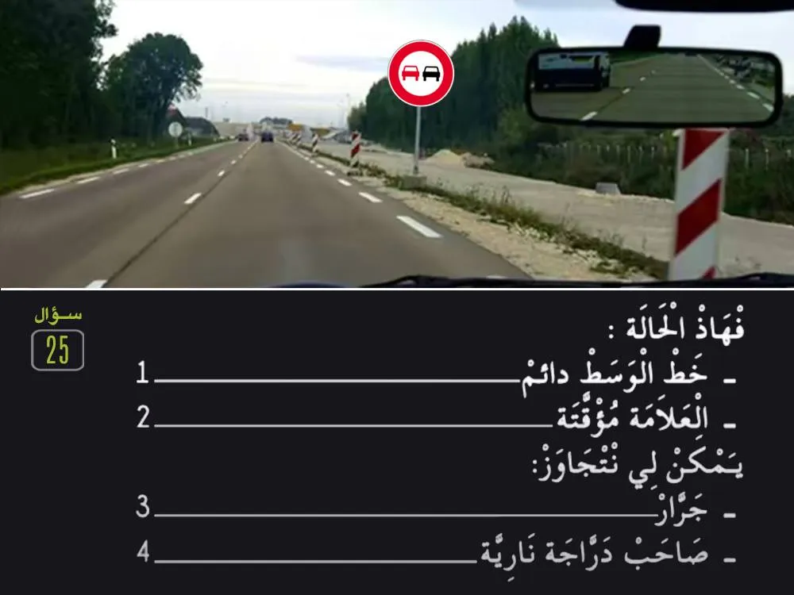
بيّن الجواب
الجواب الصحيح: 1 و 4
بما أن الإشارات الطّرقية ليست باللون الأصفر إذن فهي دائمة وليست مؤقّتة. لديّ إشارة طرقية ممنوع التّجاوز بالنسبة للعربات التي لديها 4 عجلات، إذن لا يمكنني تجاوز الجرّار، لكن يمكنني تجاوز صاحب درّاجة نارية.
السؤال 26
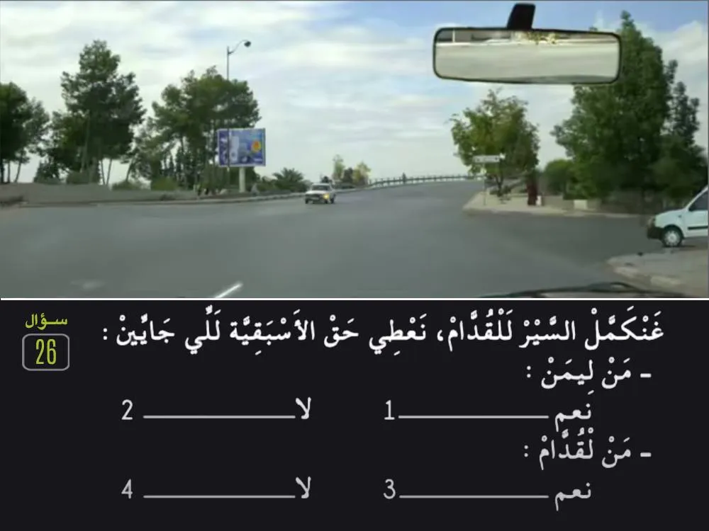
بيّن الجواب
الجواب الصحيح: 1 و 4
أتواجد في ملتقى طرق، ولا توجد علامات طرقية تنظم حركة السّير، إذن سوف نطبّق قاعدة الأسبقية للعربات القادمة من اليمين. في هذه الحالة بما أنني سوف أكمل السّير للأمام فسوف أعطي حق الأسبقية للعربات القادمة من اليمين، لكن لا أعطي حق الأسبقية للعربات القادمة من الأمام.
السؤال 27
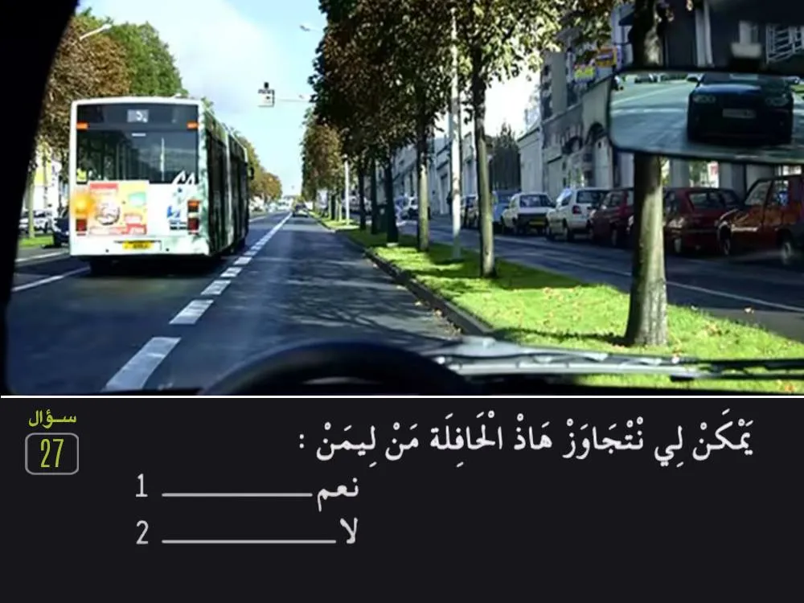
بيّن الجواب
الجواب الصحيح: 1
بما أن الحافلة تستعد للانعطاف على اليسار، فيمكنني استعمال المسلك المتواجد على اليمين لتجاوزها. (هذه هي الحالة الوحيدة التي يمكنني تجاوز عربة من اليمين، عندما تكون تلك العربة تستعد للانعطاف على اليسار).
السؤال 28
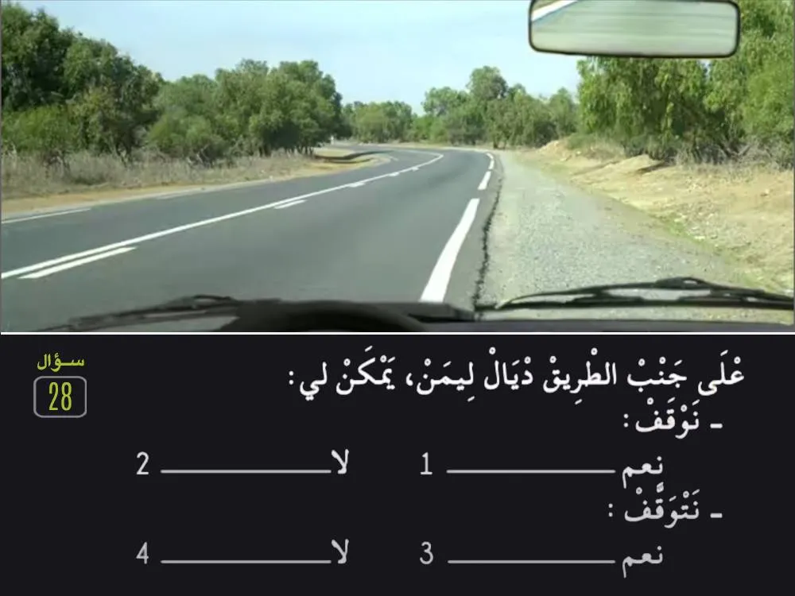
بيّن الجواب
الجواب الصحيح: 1 و 3
بما أنني بعيد وعلى مسافة كافية من المنعرج، فيمكنني الوقوف أو التوقّف على جانب الطّريق (حاشية الطّريق).
السؤال 29
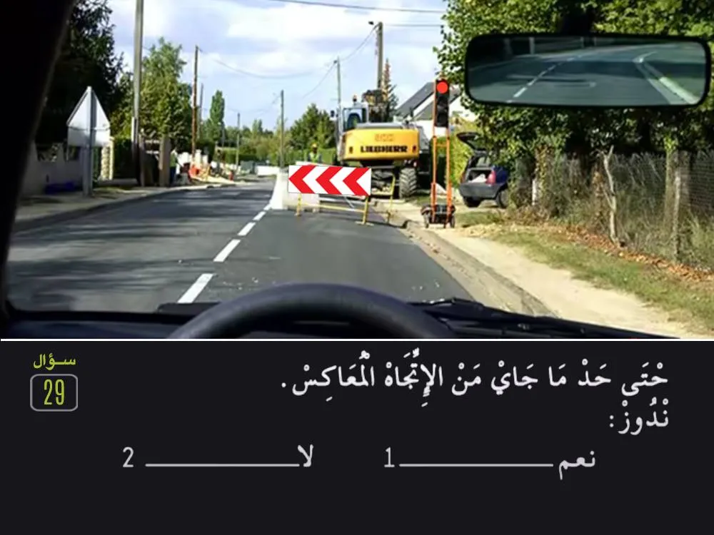
بيّن الجواب
الجواب الصحيح: 2
بما أنه توجد إشارة ضوئية حمراء، فلا يمكنني المرور حتى وإن لم تكن هنالك عربات قادمة من الاتّجاه المعاكس. يجب عليّ انتظار الإشارة الضوئية الخضراء لكي أقوم بالمرور.
السؤال 30
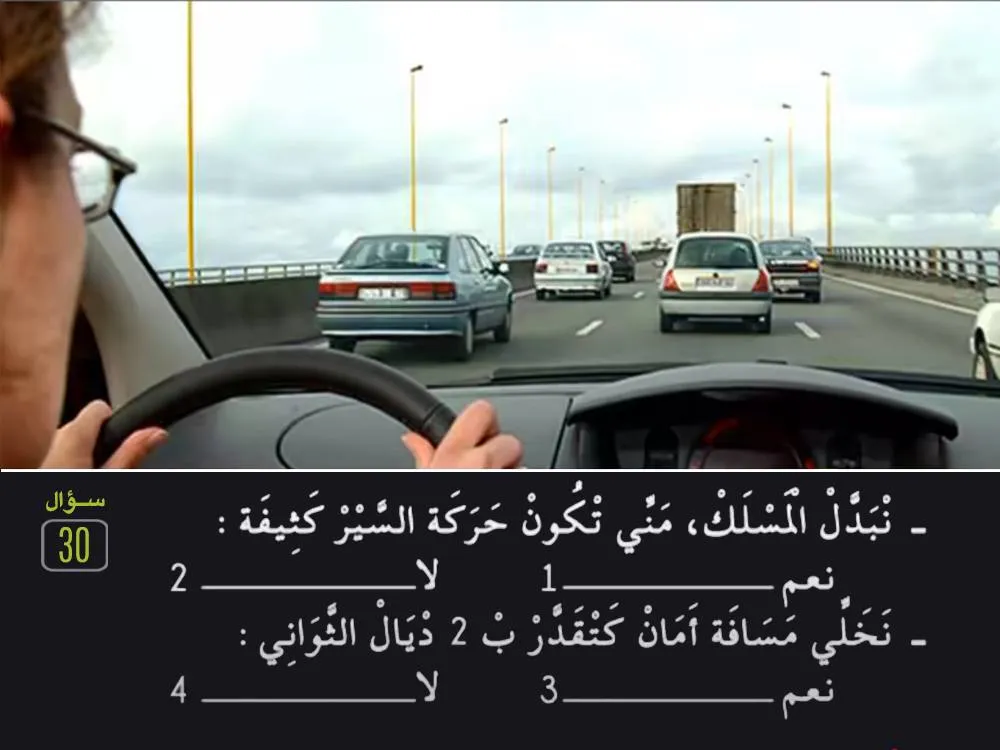
بيّن الجواب
الجواب الصحيح: 2 و 3
عندما تكون هنالك حركة سير كثيفة فيجب عليّ البقاء في المسلك الذي أتواجد فيه ولا أقوم بتغيير المسلك اذا كنت أسير مباشرة، (أقوم بتغيير المسلك فقط إذا كنت أريد الانعطاف). وينصح أيضا بترك مسافة أمان تقدر ب 2 ثواني لكي تكون لي مسافة امان كافية لكي اتّخد قرار مناسب في حالة حدوث شيئ ما.
السؤال 31
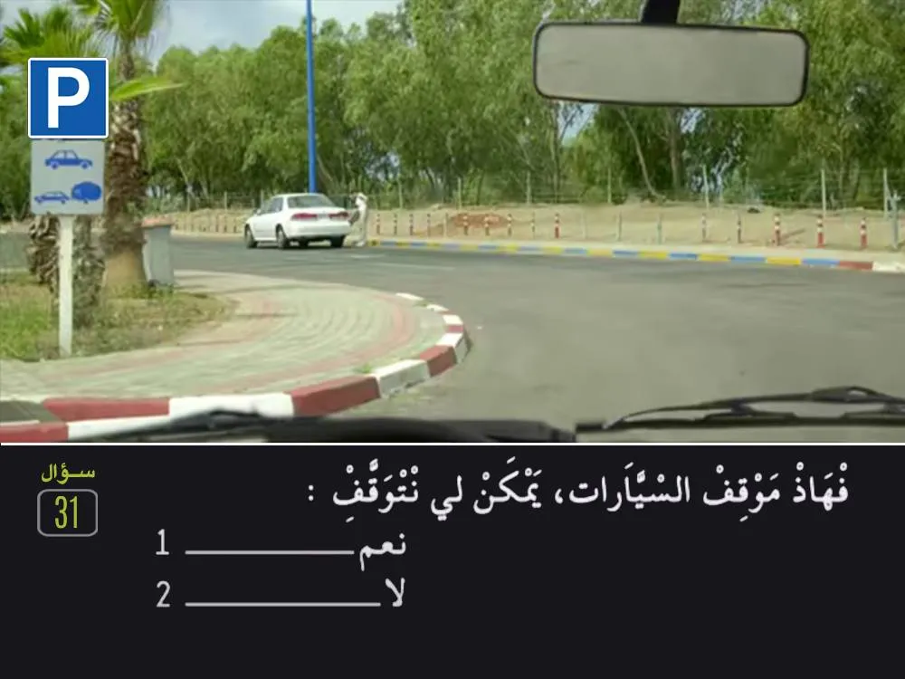
بيّن الجواب
الجواب الصحيح: 1
العلامة الخاصة بموقف السّيارات تشير على أن الموقف خاص بالسيارات والعربات التي تجر مقطورة. إذن في هذا الموقف الخاص بالسيارات يمكنني التوقّف.
السؤال 32
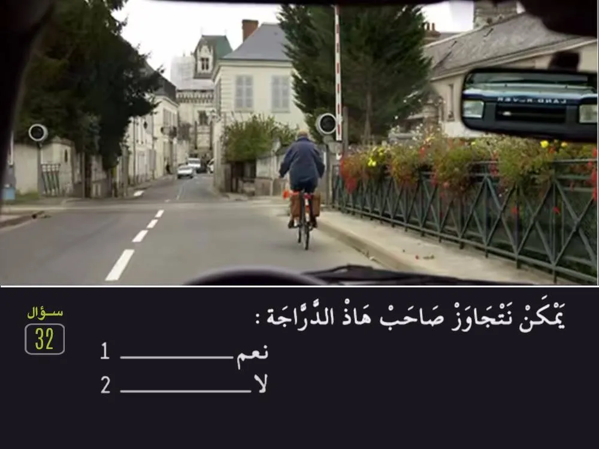
بيّن الجواب
الجواب الصحيح: 1
بما أن ضوء السّكة منطفئ والأعمدة في الأعلى فهذا يعني أنه يمكنني المرور. الخط متقطّع فيمكنني تجاوز صاحب الدّراجة بترك مسافة جانبية تقدّر على الأقل بمتر بما أننا نتواجد داخل تجمع سكني. (العربة التي في الأمام مازالت بعيدة).
السؤال 33
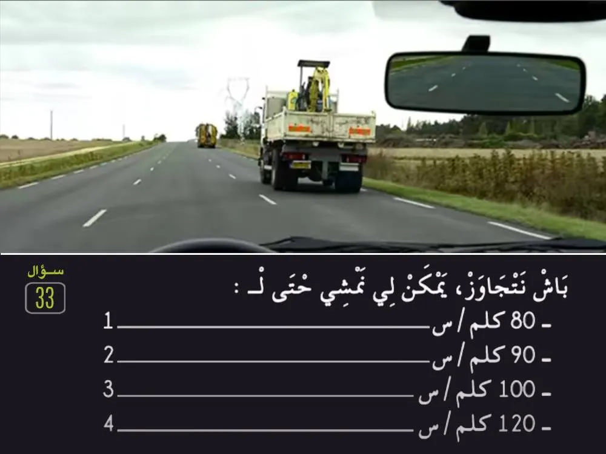
بيّن الجواب
الجواب الصحيح: 3
الخط أقصى اليسار فهو متقطّع وهو يعني على أن الطّريق ذات اتّجاهين يعني على أن هنالك عربات قادمة في الاتّجاه المعاكس، وأيضا يعني على أننا في طريق وطنية. وفي طريق وطنية فإن السّرعة القصوى هي 100 كلم في الساعة، إذن في هذه الحالة لكي أقوم بعملية التّجاوز فيمكنني السّير حتى سرعة 100 كلم في الساعة كحد أقصى.
السؤال 34
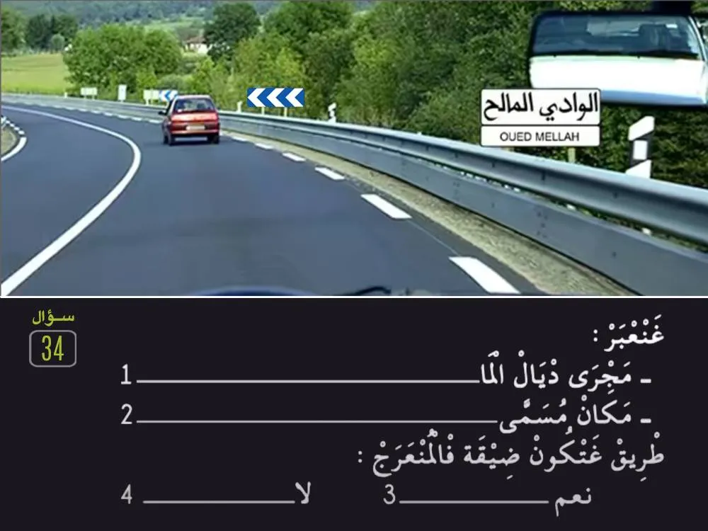
بيّن الجواب
الجواب الصحيح: 1 و 4
علامة الإرشاد مكتوب فيها )الوادي المالح) إذن فهي تشير إلى مجرى للماء. لا توجد أي إشارة طرقية تشير إلى أن الطّريق ضيّقة في المنعرج.
السؤال 35
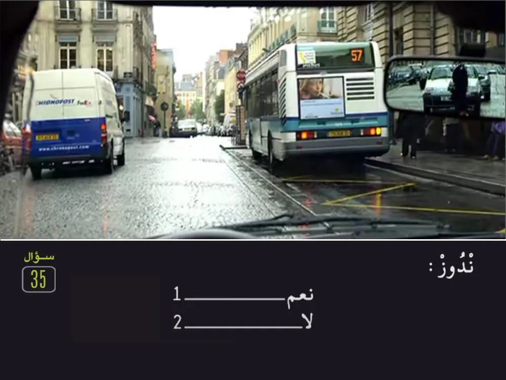
بيّن الجواب
الجواب الصحيح: 1
بما أن الحافلة متوقفة في مكانها الخاص ولا تستعد للاندماج في المسلك الخاص بالسّير، إذن يمكنني المرور بما أن الطّريق أمامي فارغة.
السؤال 36
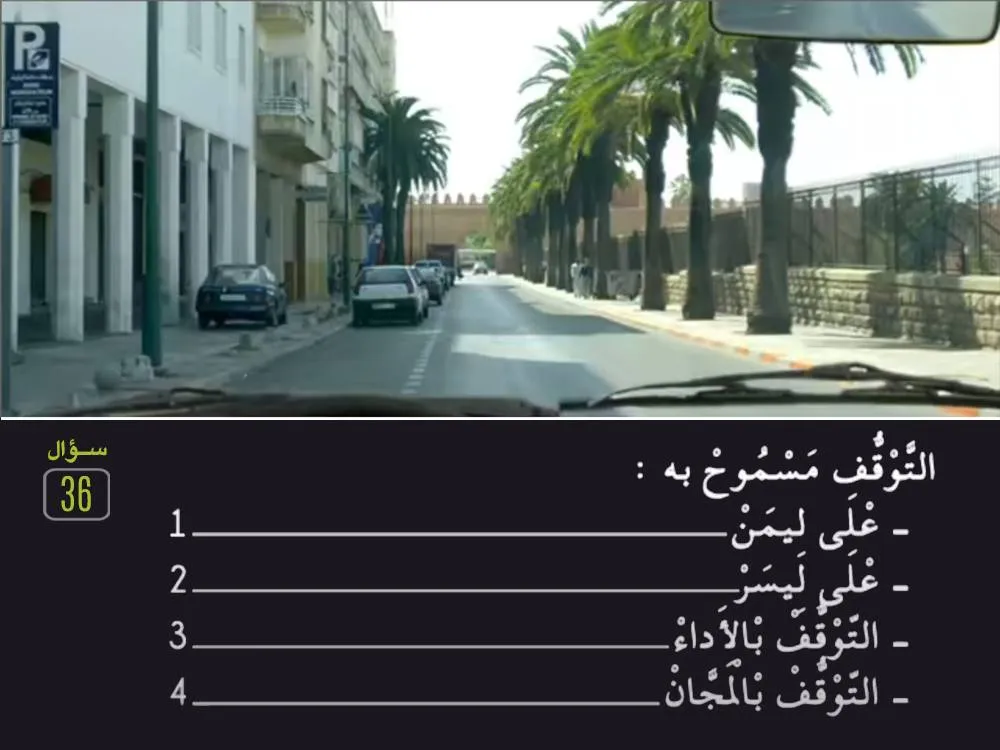
بيّن الجواب
الجواب الصحيح: 2 و 3
التوقّف على اليسار مسموح به، لكن ممنوع على اليمين لأن الرّصيف مصبوغ بالأصفر والأبيض. بالنسبة للتوقّف في هذا المكان فهو بالاداء (بلخلاص) ليس مجاني، كما تشير إليه علامة موقف السّيارات على اليسار.
السؤال 37
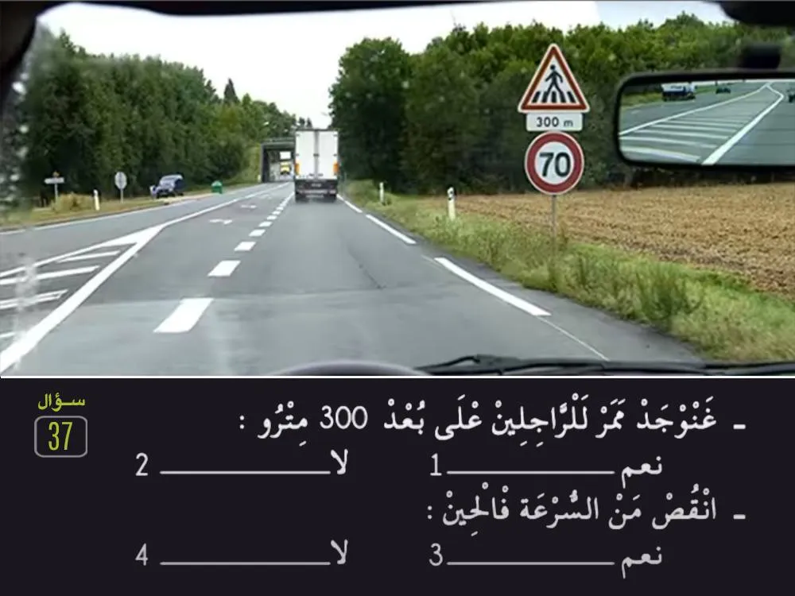
بيّن الجواب
الجواب الصحيح: 1 و 3
العلامة الطّرقية تعني خطر وجود ممر الراّجلين على بعد 300 متر. وبما أنه سوف أجد ممر الراّجلين قريب في الأمام إذن يجب عليّ أن أنقص من السّرعة من الان لكي أصل إلى ممر الراجلين وسرعتي منخفضة.
السؤال 38
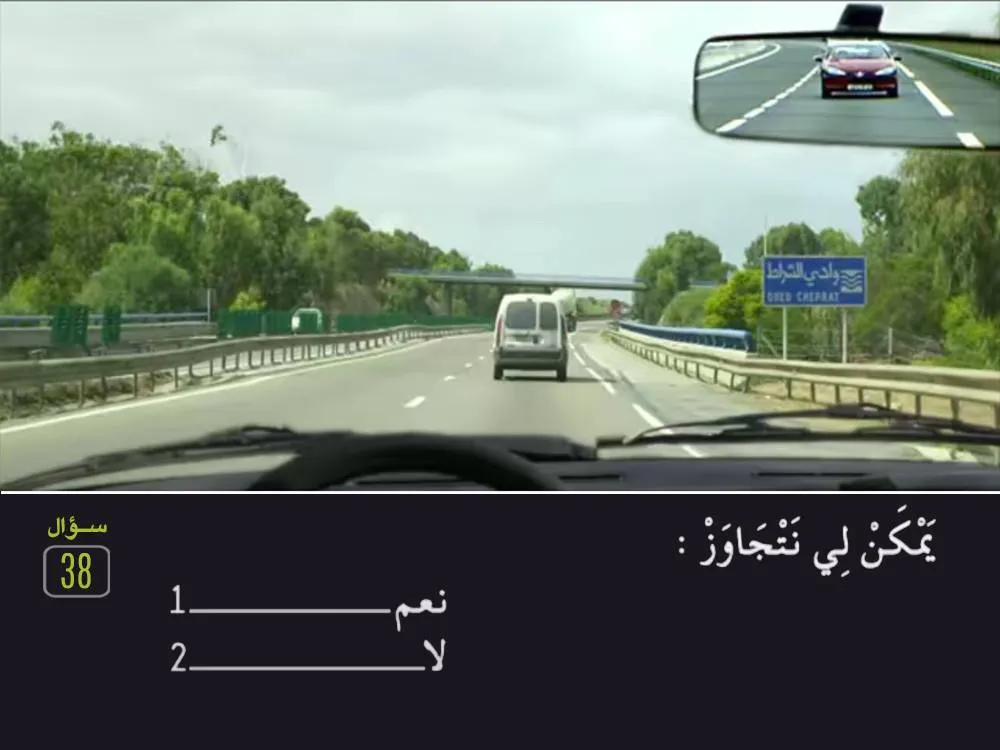
بيّن الجواب
الجواب الصحيح: 1
العلامة الطّرقية على اليمين زرقاء والخط المتّصل أقصى اليسار وهذا يعني على أنني في طريق سيّار، إذن الطّريق ذات إتّجاه واحد، السيّارة التي في الخلف لا تستعد لتجاوزي، إذن يمكنني التّجاوز.
السؤال 39
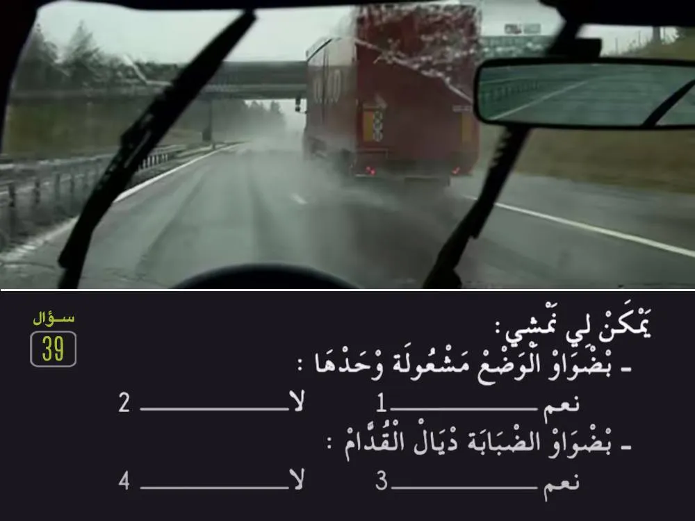
بيّن الجواب
الجواب الصحيح: 2 و 3
في حالة وجود مطر فنقوم بإستعمال أضواء التّقابل وأضواء الضباب الأمامية. لا يمكن أن نستعمل أضواء الوضع. بما أن الاختيارات في هذا السؤال فيه فقط أضواء الضباب الأمامية فأقوم باختيارها.
السؤال 40
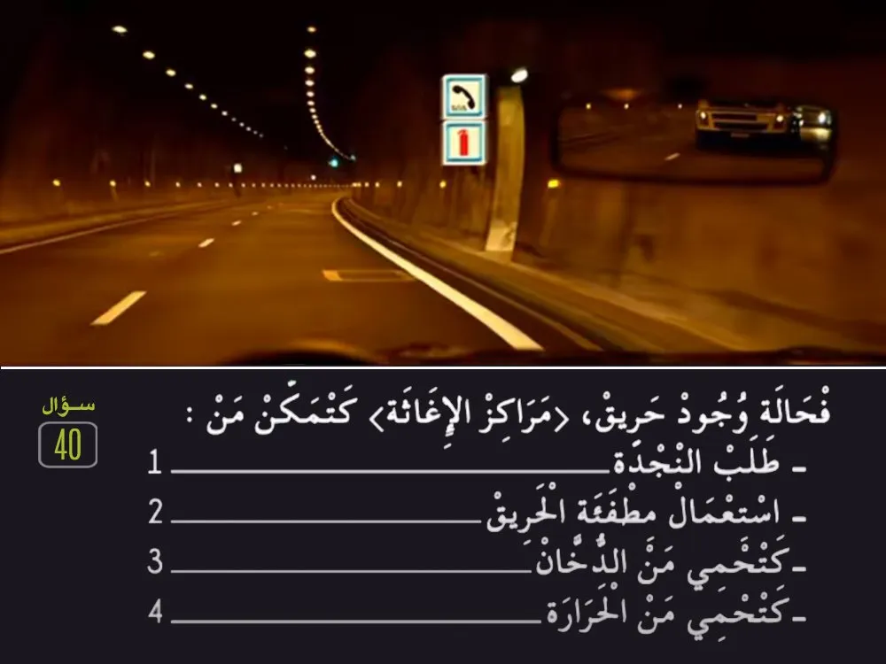
بيّن الجواب
الجواب الصحيح: 1 و 2
مراكز الإغاثة تساعدنا في طلب النجدة (يوجد هاتف في الإشارة الطّرقية) وأيضا استعمال مطفاة الحريق (كما توضح الإشارة الطّرقية).